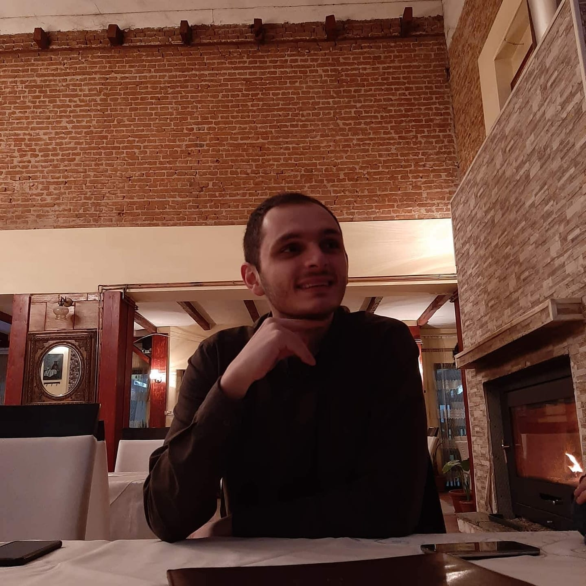

I am Jovan Jovanovski and welcome to my website!
Education
- High School: "SOU Josip Broz Tito" - Bitola
- Faculty of Electrical Engineering and Information Technology
Computer Hardware and Electroncs Engineer 4th Year
Work Experience
- Game Story Writer
I was part of a small team, which was designing two video games.
One sigleplayer and one multiplayer one. I was tasked with making up a story and lore rich worlds.
Sadly the team seprated adn the games were left unfinished.
- Internship at The Institute of Electronics
I was part of a group of students and we were tasked to design
all sorts of mostly analogue and some digital electronics at my college.
- Internship at Aptiv
I am currently attending an internship at Aptiv. Aptiv desings and manifactures
electronic components for cars. I am following an End of Line Test Engineer and he explains to me
the various problems he is solving. In the meantime I am developing an Excel vba program for them,
which takes data from a server and puts it in sheets and does various calculations.
Creative Activity
In my spare time I like to write short stories.
They vary between settings, but are connected through a theme.
The common theme is war and how a group of people get around it.
Here is one of my stories.

I am Jovan Jovanovski and welcome to my website!
Education
- High School: "SOU Josip Broz Tito" - Bitola
- Faculty of Electrical Engineering and Information Technology
Computer Hardware and Electroncs Engineer 4th Year
Work Experience
- Game Story Writer
I was part of a small team, which was designing two video games.
One sigleplayer and one multiplayer one. I was tasked with making up a story and lore rich worlds.
Sadly the team seprated adn the games were left unfinished.
- Internship at The Institute of Electronics
I was part of a group of students and we were tasked to design
all sorts of mostly analogue and some digital electronics at my college.
- Internship at Aptiv
I am currently attending an internship at Aptiv. Aptiv desings and manifactures
electronic components for cars. I am following an End of Line Test Engineer and he explains to me
the various problems he is solving. In the meantime I am developing an Excel vba program for them,
which takes data from a server and puts it in sheets and does various calculations.
Creative Activity
In my spare time I like to write short stories.
They vary between settings, but are connected through a theme.
The common theme is war and how a group of people get around it.
Here is one of my stories.
Blog
Ole Gunnar Solskjær can do one big thing well, and that is sit his side deep and attack on the counter. Frank Lampard has one big thing he has struggled to do well, and that is set his side up to defend well against the counter. That’s why when these sides met at Old Trafford last season, Chelsea had 54% possession, won the shot count 18-10 and lost 4-0. Everything Lampard did on Saturday seemed aimed at avoiding a repeat.
And it worked. As in last season’s FA Cup semi-final, Chelsea set up with a back three, left no space behind their defensive line, and successfully thwarted United. At Wembley, individual errors from United players handed Chelsea victory; here the arm Harry Maguire hooked around César Azpilicueta’s neck should at the very least have handed them a penalty.
Personnel, of course, helps. Thiago Silva was a calm and authoritative figure at the heart of the back three, while Édouard Mendy made three very good saves. He looked lively, sharp and, crucially, didn’t radiate the sort of panic Kepa Arrizabalaga has recently. But having failed to keep an away clean sheet since December, this was at heart a tactical victory for Lampard. The next stage, as he acknowledged, is to add goals to successive clean sheets; given the quality Chelsea have in the front half of the team, that should come, even if it takes time to forge the sort of coordinated attacking patterns that characterise the very best sides.
To which there is one very obvious caveat: Solskjær’s United habitually struggle to break down teams who sit deep against them. It’ll be a long time before a goalless draw at Old Trafford ceases to be a decent result, and in context it has a specific value for Lampard, but it is not the prize it once was.
Solskjær’s results fit a pattern. United have won their last 10 away games in all competitions but none of their last five at home. This is why he has beaten Paris Saint-Germain twice at the Parc des Princes, why he has three wins against Pep Guardiola, why United were the only team to take league points off Liverpool last season until the end of February. He can organise the rearguard and United have the speed and talent up front to expose teams who operate high up the pitch.
But against teams who drop off, United are far less adept. That’s why home defeats to Crystal Palace feel just as emblematic of Solskjær’s reign as away wins against PSG. It’s why the defeat to Sevilla in the Europa League semi-final was so crushing: it wasn’t just that United had missed out on a European final, it was that they had done so in such a characteristic way, flailing hopelessly like Scrappy Doo meeting a longer-armed opponent able to keep him at bay with a calm hand on the front of his head – and that despite taking the lead.
The biggest tactical criticism of José Mourinho at Real Madrid from his own players was the way he left them to improvise in the final third: his refusal to do what Guardiola and Jürgen Klopp do and work relentlessly on attacking cohesion. Over the past decade, the ability to create cohesive attacking patterns has probably been the single biggest factor that distinguishes the very best coaches from the tier below. United have consistently failed to achieve that fluency.
In the opening quarter of the game, in particular, there were constant diagonals from Maguire, Fred and Scott McTominay aimed at the space in front of Daniel James. Except there was no space, because Chelsea had a deep-lying back five. Reece James advanced only rarely and when he did, Azpilicueta, as a regular right-back, was perfectly equipped to cover behind him.
The barrage did eventually stop, but it was replaced by safety-first sideways passing. Solskjær, never shy of appealing to romantic myth, spoke of how a full Stretford End might have sucked in Marcus Rashford’s late effort; more likely they would have been groaning in frustration at the witlessness of much of what had gone before.
United created four meaningful chances: snapshots from Rashford and Juan Mata, a break by Rashford after a Jorginho error and Edinson Cavani’s improvised flick into the side-netting after some sharp movement. None of them were the result of coordinated play. Against diligent opponents, that can happen, but it is happening to United every time they meet a team that sits deep.
In that sense, this was a logical fifth step in the sequence. Solskjær had won his first three meetings against Lampard, who in the past two has found a way of correcting what had been going wrong before. Given Chelsea’s continuing defensive problems and the fact United had let in nine in their previous two home games, the caution was understandable. The outcome was a game that felt oddly out of time, like a top-six clash from 15 years ago.
But given the wildness that has characterised the start to this season, the obvious risks of operating a high line with a lack of time properly to organise the press, it may be that more sides adopt a more traditional approach. There were specific reasons for the conservatism of both sides but, in a highly unusual environment, it could be a glimpse of a broader immediate future.
There has never been a whole lot of overlap between the social realism of Ken Loach and the twisted horror of A Nightmare on Elm Street. But that’s about to change with the release of His House, a strikingly original debut from the gifted British film-maker Remi Weekes, which was snapped up by Netflix at Sundance earlier this year for an eight-figure sum.
His House follows a South Sudanese couple – Wunmi Mosaku as Rial, Sope Dirisu as her husband Bol – who are dumped on a bleak Essex housing estate while their appeal for asylum is considered. Their temporary home is blighted by peeling walls, dodgy wiring and hostile neighbours. Worse than that, it’s haunted. If they flee, Rial and Bol risk deportation for violating bail. Stay, however, and they will need to do battle with the wall-dwelling creatures, which appear to have followed them from Africa.
This isn’t the first film to use the conventions of horror to address this modern crisis: Mati Diop’s Atlantics imagined the women of Dakar being possessed by the ghosts of migrants who had perished at sea. But it is undoubtedly the scariest. His House thrives on two types of threat, the social and the supernatural, each intensifying the other. Horror audiences will be accustomed to figures lurking in the back of the frame – it’s just that, in this case, there’s no knowing whether it will be a scuttling monster, a meddling immigration official, or a lout.
When the idea of a horror story involving asylum-seekers was first proposed to Weekes by producers, he was unsure if he had any personal connection to the material. Although his grandparents are from St Lucia and Sierra Leone, he was raised in London. “But once I thought about it, I was reminded of how I felt growing up in this country,” says the 33-year-old, sitting in his home with a bicycle leaning against the wall behind him.
“You’re torn. There’s one side that wants to assimilate and be accepted by a culture that is ambivalent toward you. Then another side wants to reject that, to be proud of where you’re from, to rebel against the norms. That’s always been in the background of conversations with my family and friends: which parts of us are English and which are from other places?”
The theme of tribalism underpins His House. Back in South Sudan, Rial scarred herself with the markings of two warring factions to improve her chances of survival. Now in Britain, she finds it harder to move between tribes. In the film’s most provocative scene, she approaches a group of black British teenagers for help, only to receive a chastening reminder that skin colour is no guarantee of solidarity.
Weekes consulted with Waging Peace, an organisation that opposes genocide and human rights violations in Sudan, and Right to Remain, which helps people navigate the UK asylum system. This was to ensure a realistic grounding for a story that takes flight into the nightmarish. “It was important to know how asylum seekers are treated,” he says. “The draconian rules, the uncaring bureaucracy, it all shows this lack of empathy.”
Physical displacement and disorientation become, in the film, a breeding ground for internal horrors. “Being effectively under house arrest, you can really take a battering psychologically. All the spooky stuff that happens in the house I wanted to treat as tangible. Whether it’s real or not doesn’t matter – it feels real to the characters.”
Weekes first made his name as one half of the partnership Tell No One, turning out playful, effects-driven video shorts with his childhood friend Luke White. The duo’s name suggests the sinister or the secretive, though nothing could be further from the truth. “We just wanted to put stuff online without telling anyone,” says Weekes. “It was more a reference to our psychology, to not letting ego get in the way. We’re very understated people. Get us in a meeting and we go quiet.”
Posting their shorts on YouTube and Vimeo, the pair attracted commissions from fashion and advertising. Those films have an enchanting simplicity: in one, coloured umbrellas pop open like vibrant floral blooms, while another shows arms layered digitally on screen to create a tree of limbs.
His House also features a multiple-arm scene, as does Weekes’s Channel 4 horror short Tickle Monster. Does he have a fear of limbs? “I don’t think so,” he says with a sheepish giggle. “Tickle Monster came from a conversation I had with a friend. He was dating someone who kept tickling him. Even though he hated it and it made him feel awful, his laughter seemed to the other person like some weird form of consent. I thought, ‘That could be a horror film.’”
He has also encountered another kind of monster: Harvey Weinstein, who was desperate to get his paws on His House, back when it was a hot script doing the rounds. “When I turned the Weinstein Company down, they got upset and tried to sue me. They’re very aggressive about getting the rights to films. If it wasn’t for the #MeToo movement that blew up the company, they probably would have had their way.” Now that’s a scary story.
How do Sundays start? With my girls in the swimming pool here in LA. Unless there’s a grand prix on, in which case I’ll be in front of the television. I live for my Formula One.
What’s for breakfast? A bacon sandwich or scrambled eggs with hash browns. I never got into the whole Californian juice thing. I was 54 when I moved here, and you’ve pretty much established the way you live by then. I came here and just carried on being English.
Sunday soundtrack? I don’t listen to music at all. Not for pleasure. It’s impossible to listen without picking it apart, so it’s a bit like working. Also, I’ve got three children, four dogs and a very noisy wife, so if I do find a quiet moment I treasure it.
A trip out? Whale watching. There’s a place called Newport Beach where you can take a boat out and see whales pretty much all year round. I’ve seen blue whales, humpbacks, all kinds. But no way am I going in the water – they’ve got great white sharks here, too.
Sunday lunch? We might go to Wahlburgers on Sunset in Hollywood. My wife and kids have the vegetarian ‘Impossible Burger’, and they do a meat one for me. I want to be vegetarian, but I’m not there yet.
Sundays growing up? We all loved to drive, so often we’d just get in the car and go somewhere new and it felt like an adventure. I’ve always been into aeroplanes and the Second World War, so my mum and dad might take me to a tank museum or to Heathrow to watch the airliners coming in. I had a brilliant childhood.
A perfect Sunday afternoon is…The family watching a film together. After our meal we’ll almost invariably end up at the cinema. We just watched the Secret Garden. It was magical and beautifully filmed – I loved it.